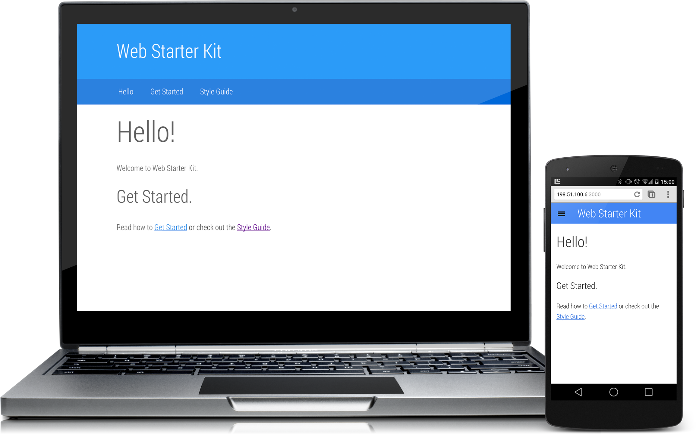

Start Your Site with Web Starter Kit
Set Up Web Starter Kit
Web Starter Kit relies on NodeJS, NPM, Ruby & Sass to work, once you've got these on your machine, you'll have everything you need to start using Web Starter Kit in your projects.
Web Starter Kit relies on NodeJS, NPM, Ruby & Sass to work, once you've got these on your machine, you'll have everything you need to start using Web Starter Kit in your projects.
There are two tool sets you need to install on your machine before you can build sites with Web Starter Kit: NodeJS & NPM, Ruby & Sass.
Web Starter Kit’s build tools need Node and NPM. Node is used to run Gulp, the task runner. NPM is used to download the modules needed to perform certain tasks in Gulp.
If you aren’t sure if you have NodeJS and NPM, check by opening a terminal and
running node -v. If Node responds, check the version matches the current version
on NodeJS.org.
If you don’t get a response or have an old version then go to NodeJS.org and click on the big green Install button. NPM will be installed with NodeJS automatically.
Web Starter Kit uses Sass to make our style guide nice and modular, but Sass requires Ruby. For those new to Sass, the project describes itself as a “CSS extension language”. Essentially it’s CSS with some extra features. For example, it adds support for variables and functions, which help you structure your CSS in a modular and reusable fashion.
First check if you have Ruby already with ruby -v. If you get an error or a
version number less than 1.8.7, you need to install Ruby by visiting the Ruby
downloads page.
Once you have Ruby, install Sass with the following command:
$ gem install sass
The first step is to go to https://developers.google.com/web/starter-kit/ and download and extract the zip.
Next, you need to install the local dependencies for Web Starter Kit. Open a terminal, change directory into your project folder and run the following npm install scripts.
$ cd web-starter-kit
$ npm install
$ npm install gulp -g
That’s it! You now have everything that’s needed to use the Gulp tools in Web Starter Kit.
The next section of this guide covers how to use Gulp, but if you want to see
how things look, try running the local server by typing gulp serve.

Updated on 2014-04-23
Except as otherwise noted, the content of this page is licensed under the Creative Commons Attribution 3.0 License, and code samples are licensed under the Apache 2.0 License. For details, see our Site Policies.